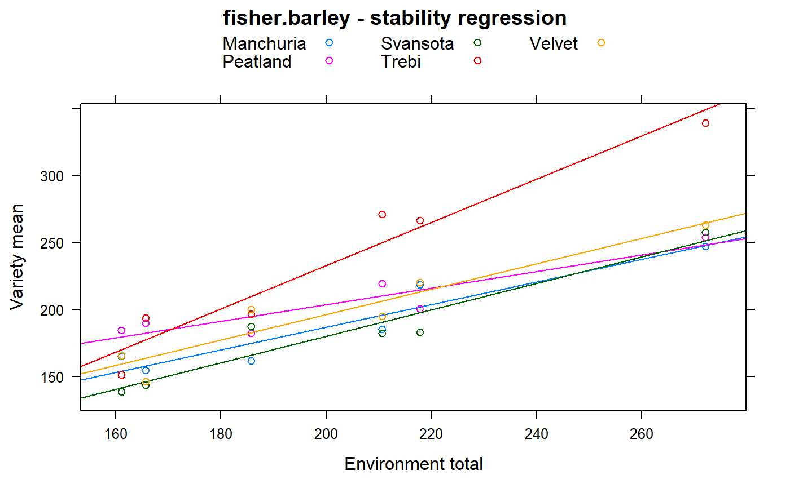

fisher.barley.RdMulti-environment trial of 5 barley varieties, 6 locations, 2 years
data("fisher.barley")
A data frame with 60 observations on the following 4 variables.
yieldyield, bu/ac
gengenotype/variety, 5 levels
envenvironment/location, 2 levels
yearyear, 1931/1932
Trials of 5 varieties of barley were conducted at 6 stations in Minnesota during the years 1931-1932.
This is a subset of Immer's barley data. The yield values here are totals of 3 reps (Immer gave the average yield of 3 reps).
Ronald Fisher (1935). The Design of Experiments.
George Fernandez (1991). Analysis of Genotype x Environment Interaction by Stability Estimates. Hort Science, 26, 947-950.
F. Yates & W. G. Cochran (1938). The Analysis of Groups of Experiments. Journal of Agricultural Science, 28, 556-580, table 1. http://doi.org/10.1017/S0021859600050978
G. K. Shukla, 1972. Some statistical aspects of partitioning of genotype-environmental components of variability. Heredity, 29, 237-245. Table 1. http://doi.org/10.1038/hdy.1972.87
library(agridat) data(fisher.barley) dat <- fisher.barley libs(dplyr,lattice) # Yates 1938 figure 1. Regression on env mean # Sum years within loc dat2 <- aggregate(yield ~ gen + env, data=dat, FUN=sum) # Avg within env emn <- aggregate(yield ~ env, data=dat2, FUN=mean) dat2$envmn <- emn$yield[match(dat2$env, emn$env)] xyplot(yield ~ envmn, dat2, group=gen, type=c('p','r'), main="fisher.barley - stability regression", xlab="Environment total", ylab="Variety mean", auto.key=list(columns=3))# ---------------------------------------------------------------------------- if(0){ # calculate stability according to the sum-of-squares approach used by # Shukla (1972), eqn 11. match to Shukla, Table 4, M.S. column # also matches fernandez, table 3, stabvar column libs(dplyr) dat2 <- dat dat2 <- group_by(dat2, gen,env) dat2 <- summarize(dat2, yield=sum(yield)) # means across years dat2 <- group_by(dat2, env) dat2 <- mutate(dat2, envmn=mean(yield)) # env means dat2 <- group_by(dat2, gen) dat2 <- mutate(dat2, genmn=mean(yield)) # gen means dat2 <- ungroup(dat2) dat2 <- mutate(dat2, grandmn=mean(yield)) # grand mean # correction factor overall dat2 <- mutate(dat2, cf = sum((yield - genmn - envmn + grandmn)^2)) t=5; s=6 # t genotypes, s environments dat2 <- group_by(dat2, gen) dat2 <- mutate(dat2, ss=sum((yield-genmn-envmn+grandmn)^2)) # divide by 6 to scale down to plot-level dat2 <- mutate(dat2, sig2i = 1/((s-1)*(t-1)*(t-2)) * (t*(t-1)*ss-cf)/6) dat2[!duplicated(dat2$gen),c('gen','sig2i')] ## <chr> <dbl> ## 1 Manchuria 25.87912 ## 2 Peatland 75.68001 ## 3 Svansota 19.59984 ## 4 Trebi 225.52866 ## 5 Velvet 22.73051 } # ---------------------------------------------------------------------------- if(0){ # mixed model approach gives similar results (but not identical) # asreml3 libs(asreml) dat2 <- dat2[order(dat2$gen),] # G-side m1g <- asreml(yield ~ gen, data=dat2, random = ~ env + at(gen):units, family=asreml.gaussian(dispersion=1.0)) m1g <- update(m1g) summary(m1g)$varcomp[-1,1:2]/6 ## gamma component ## at(gen, Manchuria):units!units.var 33.8318944 33.8318944 ## at(gen, Peatland):units!units.var 70.4838297 70.4838297 ## at(gen, Svansota):units!units.var 25.2558315 25.2558315 ## at(gen, Trebi):units!units.var 231.6923935 231.6923935 ## at(gen, Velvet):units!units.var 13.9189381 13.9189381 ## R!variance 0.1666667 0.1666667 # R-side estimates = G-side estimate + 0.1666 (resid variance) m1r <- asreml(yield ~ gen, data=dat2, random = ~ env, rcov = ~ at(gen):units) # or diag(gen):units m1r <- update(m1r) summary(m1r)$varcomp[-1,1:2]/6 ## gamma component ## gen_Manchuria!variance 34.03643 34.03643 ## gen_Peatland!variance 70.72723 70.72723 ## gen_Svansota!variance 25.38494 25.38494 ## gen_Trebi!variance 231.84662 231.84662 ## gen_Velvet!variance 14.05591 14.05591 }